انقر على أمر "العب" Play. وهو ما يظهر لك في أعلى الشاشة.
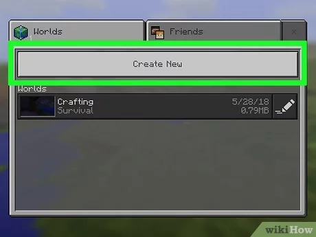
2/
انقر على أمر "إنشاء جديد" Create New. يظهر لك هذا الخيار بالقرب من أعلى الشاشة.
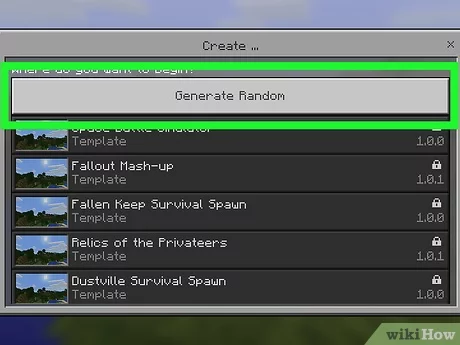
3/
انقر على أمر "إنشاء عالم جديد" Create New World. يظهر لك هذا الاختيار بالقرب من أعلى الشاشة، وبالضغط عليه تُفتح لك صفحة إنشاء عالم جديد على اللعبة.
إذا لم يظهر لك هذا الاختيار، انقر أولًا على تبويب "عالم جديد" (New World) في الركن الأيسر العلوي من الشاشة
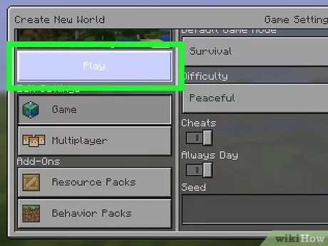
4/
انقر على أمر "إنشاء" Create. يظهر لك هذا الزر في الجانب الأيسر من الشاشة، وبالضغط عليه يتم تأكيد ما اخترته من إعدادات للعبة وإتمام عملية إنشاء العالم الذي سوف تلعب من خلاله. ما أن تنتهي عملية إنشاء العالم وتحميله، يمكنك مباشرة بدء اللعب، وهو ما نشرحه بالتفصيل أكثر إن شاء الله
1
الجزء الثاني
بدء لعب ماين كرافت
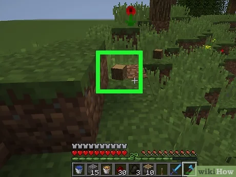
1/
ابدأ في جمع مواردك الأولية. تهدف لعبة ماين كرافت إلى أن تخوض تجربة العيش في عالم افتراضي من اللعبة والنجاح في البقاء على قيد الحياة، وهو ما يتحقق لك بالضرورة – كما هو الأمر في الحياة الواقعية – من خلال جمع الموارد من الطبيعة المحيطة بك والنجاح في استغلالها كأفضل ما يكون. في بداية دقائقك الأولى في داخل اللعبة، يجب عليك العمل على جمع ما يلي:
الطوب الترابي: وسيلة البناء الأكثر شيوعًا في اللعبة تقريبًا، وإن كانت تتضاءل الحاجة إليه كلما مضيت قدمًا في اللعبة وخضت مراحل متقدمة، إلا أنه مفيد للغاية في البداية لاستخدامه في بناء مأوى مؤقت لنفسك في المراحل الأولى من اللعبة. الطوب الترابي مفيد للغاية كذلك كونه صالح للاستخدام إذا علقت في حفرة عميقة، والذي يمكنك ترتيبه واحدة بواحدة من أجل بناء سلم يساعدك على الخروج من تلك الحفرة.
الكتل الخشبية: يمكن الحصول على هذا المورد من خلال ضرب الأشجار. تفيدك الكتل الخشبية في الكثير من الأشياء، من بينها: البناء وصناعة الأسلحة والأدوات اليدوية وغيرهم من الموارد.
الحصى والرمل: كل منهما مشابه للتراب/ الطوب الترابي، ويمكن استخدام أي منهما كمادة لبناء الأرضيات أو الجدران. لاحظ فقط أن الحصى والرمل يقعا في حالة لم يتم وضع كتل/ طوب أسفل منهما مباشرة.
الصوف: يمكنك الحصول على الصوف من خلال قتل الأغنام الموجودة من حولك في اللعبة. تحتاج إلى الصوف (ثلاثة قطع من نفس النوع) وأي نوع من ألواح الخشب لكي تقدر على بناء فراش/ سرير، والذي يُعد بدوره أحد أهم الأشياء التي تساعد على اللعب وعلى بقائك على قيد الحياة، مما يجنبك الإحباط في المراحل الأولى من لعبة ماين كرافت.
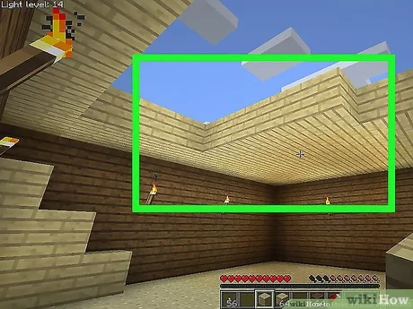
2/
اصنع لنفسك منزلًا مؤقتًا. استخدم التراب والحصى والرمل في بناء أربعة جدران وسقف مكونًا لنفسك منزلك الأول في اللعبة. يكفيك في هذه المرحلة هذا المنزل الصغير المؤقت، وفي حقيقة الأمر هو ضروري للغاية لكي تجد لنفسك مكانًا صالحًا للاختباء ما أن تبدأ الدورة الليلية من اللعبة (بالإنجليزية: World's Night Cycle).
يُنصح دائمًا ببناء المنازل باستخدام التراب/ الطوب الترابي وفي المقابل توفير الخشب لاستخدامه في صناعة الأدوات الخشبية والأسلحة.
تذكر أهمية ترك ما لا يقل عن مساحة طوبة واحدة في مكان ما من جدران المنزل (شيء أشبه بالنافذة) وهو ما يساعدك على معرفة الوقت بالخارج، وتحديدًا عند بزوغ الفجر، وهو الوقت الذي تنتهي فيه الدورة الليلية ويصبح بإمكانك الخروج من المنزل والعمل على تجميع المزيد من الموارد
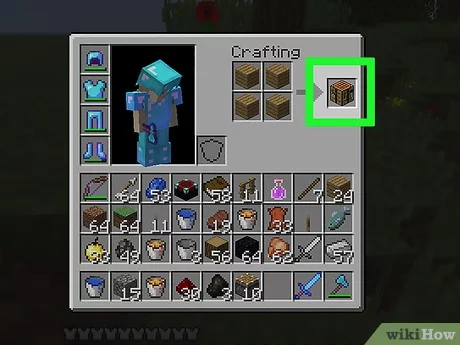
3/
اصنع طاولة للأعمال الحرفية. ستحتاج في كل مراحل اللعبة مواصلة العمل على تصنيع الأدوات والأسلحة وكل شيء تقريبًا تحتاج لاستخدامه في ماين كرافت، ومن أجل ذلك يجب أن يتوفر لديك مساحة تساعدك على إنشاء تلك الأعمال اليدوية لاحقًا، وتظهر هنا أهمية صناعة طاولة للأعمال اليدوية/ الحرفية في مخزنك الخاص في اللعبة
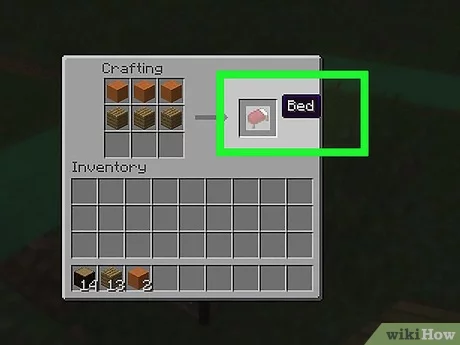
4/
اصنع لنفسك فراشًا. يؤدي الفراش/ السرير دورين بالغي الأهمية، أولهما أنه يسمح لك بتمرير فترة الخطر خلال الدورة الليلية في اللعبة، من خلال استغلاله في النوم بداخل منزلك، وثانيهما أنه يعمل بمثابة نقطة مرجعية للبدء من عندها في حالة تعرضت للموت؛ يُقصد بذلك أنك في حالة الموت، لن تبدأ من أول العالم من جديد، بل يمكنك أن تولد مرة إضافية بجوار السرير الأخير الذي استرحت فيه قبل تعرضك للموت.
من المهم للغاية أن تصنع لنفسك سرير مناسب في أسرع وقت ممكن، خاصة في حالة إذا بنيت مأواك في مكان بعيد نسبيًا عن المكان الذي بدأت من عنده اللعب.
ملاحظة : تحتاج إلي 3 خشب جاهز + 3 صوف خروف ابيض ، او اي لون صوف ، على شرط يكون 3 من نفس اللون.
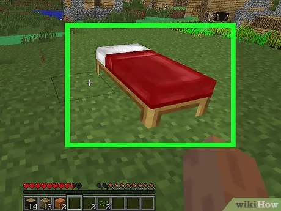
5/
نم في سريرك مباشرة بمجرد هبوط الليل. كما ذكرنا فيما سبق، يساعدك النوم ليلًا في السرير بداخل المنزل على تمرير فترة الليل دون التعرض لأي خطر، ففي خلال الليل في عوالم ماين كرافت تظهر وحوش اللعبة وتبدأ في تحدي اللاعبين، ويُشار إلى تلك الوحوش في اللعبة باسم "الموبس" (Mobs).
إذا لم تتح لك فرصة تصنيع الفراش قبل هبوط الليل، يمكنك البقاء ثابتًا تمامًا بداخل مأواك الحالي إلى أن تُشرق الشمس من جديد.
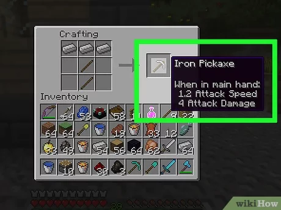
6/
اصنع لنفسك مجموعة من الأدوات. أدوات اللاعب في ماين كرافت هي العامل الأساسي المهم المؤثر على نجاحه في اللعبة، كونها تساعدك على امتلاك وتصنيع أسلحة وأدوات ودروع متطورة ومتفوقة في المراحل المتقدمة من اللعبة. تحتاج في البداية إلى عمل مجموعة الأدوات الأساسية التالية:
الفأس/المِعول: (Pickaxe) يُستخدم في تعدين الأحجار. ابدأ بعمل فأس خشبي، كما يمكنك عمل فأس معدني لاحقًا باستخدام الفأس الخشبي وتعدين ثلاثة أحجار من الصخر المعدني.
السيف: (Sword)، تستخدمه في الدفاع عن نفسك في مواجهة الوحوش. أي سيف، بما في ذلك السيف الخشبي، سيكون مفيدًا أكثر بكثير من الاكتفاء بمحاربة الوحوش بقبضة يدك.
البلطة: (Axe)، تستخدم في عملية التقطيع السريع للخشب. لا تحتاج إليها خصيصًا من أجل تقطيع الخشب، إلا أنها تساعدك على تسريع تنفيذ عملية التقطيع مقارنة بغيرها من الأدوات.
المجرفة/ الجاروف: (Shovel)، تستخدم في عملية التجميع السريع للأتربة والطين والحصى والرمل. لا تحتاج إلى الجاروف خصيصًا من أجل تجميع هذه المواد، إلا أنه يساعدك على تسريع تنفيذ العملية مقارنة بغيره من الأدوات
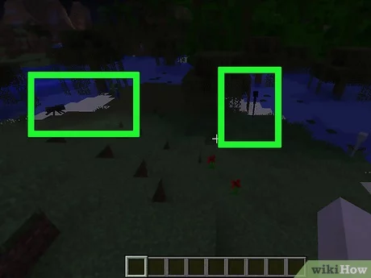
7/
تعرف على أنواع الوحوش. قد يكون رد فعلك الغريزي هو الفرار هربًا كلما رأيت أي حيوان أو وحش من الموجودين في اللعبة، لكن حقيقة الأمر أن وحوش ماين كرافت حسنة الخُلق – أغلبها وليس كلها – ولن تبادر بمهاجمتك إلا إذا هاجمتها أنت أولًا. فيما يلي ثلاثة تصنيفات للوحوش الموجودة في اللعبة:
الحيوانات المُسالمة: لن يهاجمك هذا النوع من الوحوش أبدًا، وإذا بادرت أنت بمهاجمتها سوف تسارع بالهرب منك. من أمثلة هذا النوع من الحيوانات غالبية الماشية (الخنازير والأبقار والأغنام… إلى آخره)
الوحوش المحايدة: لن تبادر هذه الوحوش بمهاجمتك من تلقاء نفسها ولكن سيكون لها رد فعل في حالة هاجمتها أنت. من أمثلة ذلك: البشر القتلة (Endermen) والعناكب (في النهار)
الوحوش العدائية: تهجم هذه الوحوش عليك ما أن تكون في نطاق رؤيتها. من أمثلتها: الموتى الأحياء (الزومبي) والهياكل العظمية والعناكب (في الليل).
2
الجزء الثالث
البقاء على قيد الحياة
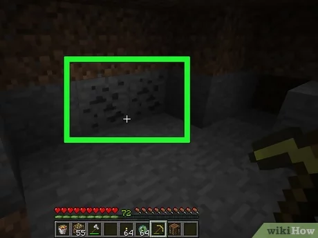
1/
ابحث عن الفحم وقم بتعدينه. الفحم أحد أهم مصادر الوقود التي لا تقدر بثمن والتي سيفديك استخدامه في الفرن (ستحتاج إلى تصنيعه في وقت لاحق من اللعبة)، كما أن الفحم مكون ضروري لعمل المشاعل.
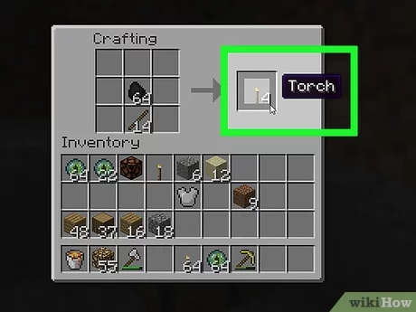
2/
اصنع المشاعل. المشعل أو المصباح أداة يمكنك صناعتها باستخدام عصا وقطعة واحدة من الفحم
ما أن يتم صناعة المشاعل لن يمكن تدميرها أو إطفائها، ولكن يمكن فقط استبعادها إلى أن تشعر بالحاجة إلى حملها من جديد وإعادة استخدامها.
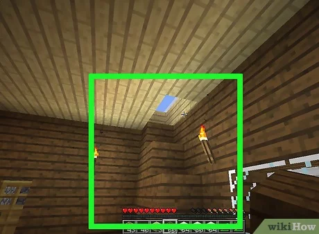
3/
ضع العديد من المشاعل حول مسكنك. يفيدك ذلك في إضاءة المنطقة المحيطة من منزلك، وكلما ارتفع مستوى الإضاءة، ساعد ذلك في منع ظهور أنواع معينة من الوحوش (مثل الزواحف والزومبي والهياكل العظمية.. إلى آخره) ويجعلها غير قادرة على أن تحوم من حول منزلك، وهو ما يمنحك قدر من الأمان في أوقات الليل.
ستحتاج إلى وضع أعداد كبيرة من المشاعل حول مسكنك لكي تضمن الحماية الكلية من ظهور الوحوش ومنع اقترابها من منزلك. يمكنك وضع حلقة دائرية من المشاعل حول المسكن مع ترك مسافات بينية بسيطة بين كل مشعل وآخر لضمان تحقيق الحماية اللازمة.
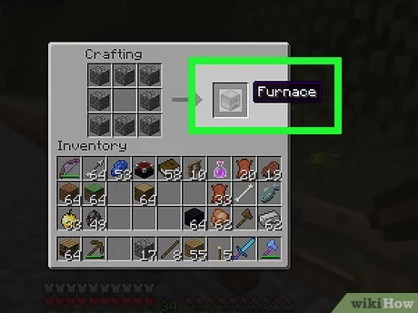
4/
ابنِ فرنًا لاستخدامه في الصهر. ستحتاج الفرن للعديد من الاستخدامات، أكثرها أهمية هو طهي الطعام وكذلك الحديد الخام إلى قضبان حديد، ونظرًا لما سبق، وأهمية كل من الطعام والحديد، بوصفهما أهم عاملين مهمين لبقائك على قيد الحياة في اللعبة، فإن خطوة بناء الفرن لا غنى عنها. سوف يمكنك ذلك على امتلاك مقومات البقاء الأساسية ومن ثم القدرة على مواصلة اللعب واستكشاف المراحل الأكثر تطورًا من اللعبة.
يمكنك استخدام الفرن من خلال وضع واحدة من الموارد الصالحة للاستخدام مع الفرن (مثل الطعام أو معدن خام) في الجزء الأعلى من الفرن ومن ثم وضع وقود (مثل: الفحم أو الخشب أو حمم بركانية) في الجزء الأدنى من الفرن.
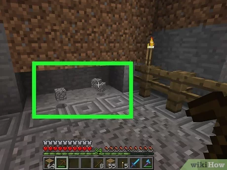
5/
ابدأ في استكشاف عالم لعبة ماين كرافت وجمع المزيد من الموارد. من أجل النجاة على المدى البعيد في عالم ماين كرافت، ستحتاج بالضرورة إلى موارد مثل أحجار الرصيف (كوبل ستون) والفحم والحديد والخشب. ابذل كل ما بوسعك من أجل تجميع أكبر قدر ممكن من تلك الموارد.
في كل مرة تجد في طريقك واحدة من المواقع الغنية بالموارد (مثل: كهف)، تأكد من تعليم المكان بطريقة أو أخرى، سواء باستخدام مشعل أو كتلة طوبية مميزة.
يمكنك صناعة الصناديق/ خزانات لتخزين الموارد المُجمعة، وبالتالي لا تضطر إلى حملهم معك في كل مرة تذهب فيها إلى الاستكشاف الاستطلاع.
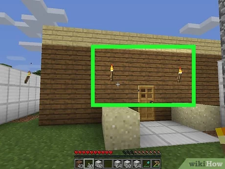
6/
ابنِ لنفسك منزلًا جديدًا. أول منزل تبنيه لنفسك في اللعبة سيكون بسيطًا ومبنيًا من مواد غير متوافقة، لذا ستشعر بالحاجة عندما يمر بك الوقت في اللعبة بضرورة بناء منزل محصن جيدًا. لا تتأخر عن فعل ذلك بمجرد أن يصبح معك المواد الكافية لبناء منزل جديد.
بعض المواد أكثر مقاومة للانفجارات مقارنة بغيرها، فالأحجار – تحديدًا الجرانيت – والحديد لها قدرة أكبر على مقاومة الانفجارات من التراب والخشب. استفد من تلك المواد في بناء منزلك الجديد من أجل التقليل من خطر هجمات الزواحف.
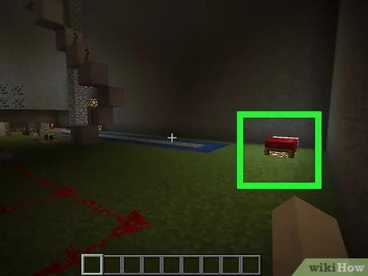
7/
انقل مكونات منزلك المؤقت إلى منزلك الجديد إذا دعت الضرورة. يكون تنفيذ هذه المهمة أسهل عندما تكون المسافة بين المنزلين قريبة. يمكنك كذلك الاستفادة من استخدام منزلك القديم كمخزن، والعمل على تأمين منزلك الجديد بشكل خاص، في حالة شعرت أن ذلك فكرة سديدة وأكثر أمانًا من محاولة نقل محتويات المنزل كلها.
راعِ القيام بعملية نقل محتويات منزلك خلال فترة الصباح.
لا تقم بكسر صناديق التخزين والمحتويات بداخلها، بل انقل أولًا محتوى الصناديق إلى المخزن الجديد، ثم اكسر الصندوق لتقدر على نقله.
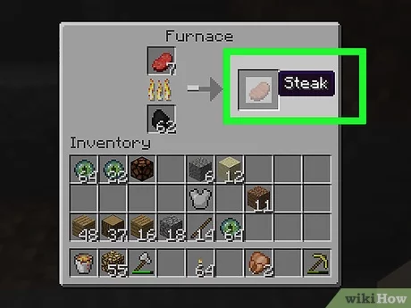
8/
ابحث عن الطعام. يمكنك الحصول على الطعام بواسطة قتل الحيوانات وتجميع اللحوم التي تسقط منها (مثل التقاط لحم الخنزير النيء بعد قتله). استخدم الطعام من أجل التعافي ورفع مقياس "الجوع" الذي يستنزف بمرور الوقت كلما بذلت مجهود في اللعبة ولم تحصل على طعام.
يمكنك طهي الطعام من خلال وضعه في الفرن، شرط أن يكون في الفرن وقود في نفس الوقت.
يمكنك التهام الطعام عن طريق وضعه في شريط "الزاد والزواد" (Equip Bar) ثم تحديد ذلك الطعام ووضعه في شريط "التعدين" (Mine)، أو من خلال النقر عليه بشكل مستمر على الشاشة في نسخة ماين كرافت للجيب.
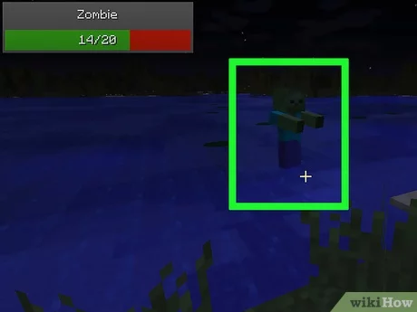
9/
تجنب القتال مع الوحوش قدر الإمكان. لعبة ماين كرافت ليست كغيرها من أغلبية الألعاب المبنية بالأساس على المعارك والقتال مع الوحوش. لا تتوانَ عن استغلال الإمكانيات المتاحة لك من أجل تصنيع المواد التي يمكنك بها الدفاع عن نفسك، ولكن لا تبادر من تلقاء نفسك للخروج والبحث عن الوحوش والقتال معهم، فلن يتسبب ذلك سوى في تعرضك للموت. توجد بالطبع بعض الاستثناءات لتلك القاعدة، كأن تحتاج إلى قتل العناكب من أجل الحصول على الخيوط (String)، لكن في أغلب الحالات في لعبة ماين كرافت، من الأفضل الهروب من الوحوش بدلًا من مقاتلتها وجهًا لوجه.
إذا كنت مجبرًا على مقاتلة الوحوش، فاختياراتك الأفضل هي أن تستخدم السيف أو البلطة. لا مانع كذلك من استخدام غيرها من الأدوات بدلًا من محاولة قتال الوحش بيدك العارية.
من الأفضل أن تترك الزواحف وشأنها (الوحوش الخضراء المتفجرة)، وفي حالة بدأت واحدة منهن في الاقتراب منك، فاضربها ضربة واحدة ثم تراجع إلى أن تنفجر.
لن يهاجمك البشر القتلة "إيندر مين" (Endermen)، وهي الوحوش السوداء الطويلة الشبيهة بالبشر، شرط أن تتجاهلها ولا تنظر إليها، لكن إذا بادرت بالنظر إليها أو ضربها فسوف تبدأ في استهدافك، ووقتها سوف تكتشف بنفسك لأي مدى من الصعب قتلهم مهما حاولت أو استخدمت من أدوات.
استخدم الأقواس والأسهم -في حال توفرها- في مواجهة الأعداء عن بعد وأنت تتراجع عن الاقتراب منهم. ضع في اعتبارك فقط أن بعض الوحوش (مثل الهياكل العظمية) لديها أقواس وأسهم ويمكنهم استخدامها في القتال عن بعد كذلك
3
الجزء الرابع
أفكار مفيدة
يمكن أن يساعدك عمل خريطة لعالمك في لعبة ماين كرافت في توثيق حركتك وتقدمك بداخل العالم. قد تُولد في عالم اللعبة وأنت تملك خريطة تلقائية في حالة كنت تلعب على نسخة ماين كرافت في وحدات تشغيل الألعاب (بلايستيشن وإكس بوكس).
يمكنك اللعب في وضعية اللعب المُسالم (Peaceful Mode) في حالة كنت ترغب في لعب وضعية النجاة (Survival Mode) دون التعرض لخطر القتل بواسطة الوحوش.
يمكنك الحصول على الموارد من خلال الإغارة على خزانات/ صناديق القرى. ابحث عن متجر "بلاك سميثز" (Blacksmith's)، والموجود على شكل مبنى له سقف مُسطح وسترى عادة حمم بركانية أمامه. لن يظهر ذلك المتجر عادة في القرى، ولكن بمجرد أن تراه أمامك سوف تجد صندوقًا بداخله.
يمكنك الاستفادة من المرور على قرى إن بي سي (NPC Village) في مبادلة الزمرد مقابل الحصول على المعدات أو البقاء بها كملجأ إذا اقترب الليل والاستفادة من موارد القرية (مثل: المزارع وورش الحدادة) في تصنيع الأدوات.
أحسن استخدام الأدوات؛ السيوف تفيدك في قتل الوحوش (مثل: الزومبي والهياكل العظمية والزواحف) والجاروف لحمل الكتل الطوبية (مثل: التراب والحصى والرمل) والبلطة لتقطيع المواد الخشبية (مثل: الصناديق وقطع الأشجار وطاولات التصنيع) والفأس للتعامل مع مصادر التعدين الحجري (مثل: الحجر والحصى الكبير والفحم الخام) والمِعزق لحرث التربة.
في حالات الطوارئ عندما تحتاج إلى ملجأ سريع، يمكنك بناء برج بارتفاع 20 طوبة والوقوف في أعلاه، ما يوفر لك في الاغلب فرصة مؤقتة للنجاة والأمان بعيدًا عن الوحوش المتجولة، ويمكنك استغلال تلك الفترة في التعافي أو التزود بأسلحة ودروع. تجنب فقط أن تتعرض للوقوع.
يوجد عالمان فرعيان من لعبة ماين كرافت: العالم السفلي "نيذير" (The Nether)، وهو عالم جحيمي/ جهنمي يحتوي على الكثير من الموارد النفيسة المخفية، والعالم النهائي "إيند" (The End)، وهو العالم الأخير الذي يمكن لك استكشافه من اللعبة.
في حالة الحركة على جزيرة تحتوي على شجرة واحدة أو الكثير من الشجر، يمكنك تقطيع الشجر وجمع الشتلات التي تحصل عليها من أوراق الشجر، والتي يمكنك الاستفادة منها في نمو المزيد من الشجر لاحقًا بما يضمن ألا ينفذ الشجر أبدًا. يمكنك الاستفادة كذلك من ثمار التفاح كخيار من خيارات الطعام، بما فيها ثمار التفاح الذهبية والتفاح الذهبي المسحور، التي تسقط من فروع الشجر.
في حالة لعب النسخة 1.9+ من اللعبة، لن يمكنك تصنيع ثمار التفاح الذهبي المسحور بنفسك، ولكن بدلًا من ذلك، سوف تضطر إلى البحث عنها في أي قبو تحت الأرض. نسبة الوصول إلى هذا النوع من ثمار التفاح لا تزيد عن 0.1% (وربما 0.01%)، لذا لا تتوقع النجاح في الوصول إليها من أول محاولة.
________________________________________________
تحذيرات
الزواحف والعناكب هي الوحوش الأكثر عندًا من بين وحوش اللعبة ويمكن لأي منهما قتلك في غمضة عين، لذا تجنبهما قدر الإمكان.
لا تحفر أبدًا بشكل مستقيم للأسفل. تحتوي عوالم ماين كرافت على الكثير من بحيرات الحمم البركانية المتخفية والموجودة أسفل السطح، كما قد يتسبب ذلك في أن تجد نفسك فجأة مُحاصرًا بمجموعة كبيرة من الزومبي (الموتى الأحياء) وغيرها من الوحوش.
لا تؤذِ سكان القرى لأن ذلك يتسبب في تقليل سمعة قريتك، والتي إذا أصبحت أدنى من -15، سوف تبدأ وحوش "الجوليم الحديدية" في استهدافك، وهي وحوش طيبة موجودة في اللعبة من أجل حماية سكان القرى، ولن ترغب أبدًا في إضافتهم لقائمة أعدائك.
كن حذرًا وأنت تستكشف وضعية العالم السفلي من اللعبة "نيذير" (Nether)، فقد تعلق هناك للأبد إذا لم تتذكر مكان البوابة التي تمكنك من الخروج